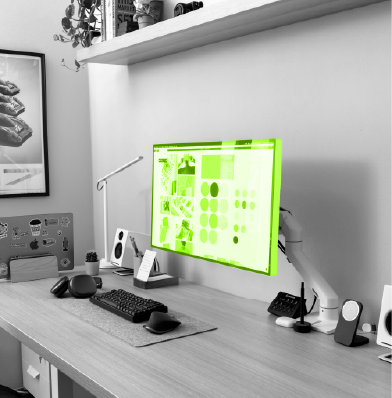

Juan Salas is a Chicago-based artist and designer specializing in brand identity, graphic design, and visual storytelling. As a proud Mexican American, his work is often inspired by Mexican patterns, bold colors, expressive typography, and cultural imagery. His passion for travel has also given him a broader appreciation for different cultures, which he brings into his creative work. Having traveled to places such as Egypt, Spain, Brazil, and Turkey, Juan draws inspiration from the local art, architecture, and cultural identities he encounters. Juan has professional experience as a Graphic Designer at HeadTurn Creative, a nonprofit Iskali, and an all-women's soccer team, where he has developed branding, logos, social media graphics, promotional materials, and culturally inspired designs. These experiences have allowed him to explore different creative environments while strengthening his ability to communicate ideas through visual design. Currently studying design at North Central College, Juan continues to build his creative skills and professional experience with the goal of becoming a Creative Director.
Have a question, creative idea, or opportunity to collaborate? Send me a message.
